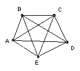

ABCDE is a convex pentagon such that BC, CD and DE are equal and each diagonal is parallel to a side (AC is parallel to DE, BD is parallel to AE etc). Show that the pentagon is regular.
Solution

Angle BEC = angle ECD (BE parallel to CD) = angle CED (DE = DC) = angle ACE (AC parallel to DE) = angle BAC (AB parallel to CE). So BAEC is cyclic, but BA is parallel to CE. Hence BC = AE. Similarly, AB = DE, so all the sides are equal.
Since BAEC is an isosceles trapezium, angle BAE = angle CBA. Similarly, all the other pairs of adjacent angles are equal, so all five angles are equal. Hence the pentagon is regular.

© John Scholes
jscholes@kalva.demon.co.uk
30 Dec 2002
Last corrected/updated 30 Dec 02